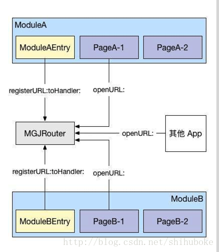
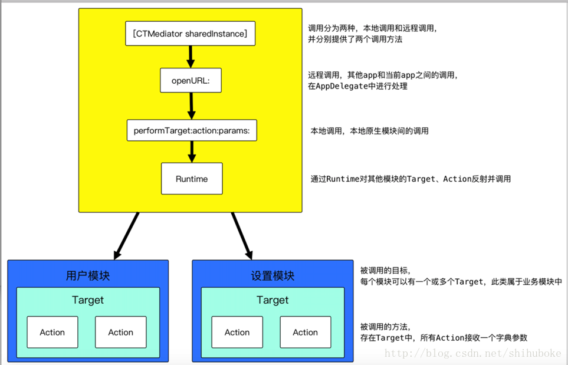

1.为什么要组件化？
* 组件和组件之间没有明确的约束；
* 组件单独开发、单独测试，不能揉入主项目中开发，测试也可以针对性的测试；
* 解决人多（更好的协作）、需求多（更好的功能模块划分）的问题；
* 解决项目模块间的代码耦合问题；（坚决抵制业务组件间代码直接引用）
2.如何拆分组件？
基础功能组件：（类似于性能统计、Networking、Patch、网络诊断等）
按功能分库，不涉及产品业务需求，跟库Library类似
通过良好的接口拱上层业务组件调用；
不写入产品定制逻辑，通过扩展接口完成定制；
基础UI组件：（例如下拉刷新组件、iCausel类似的组件）
产品内通用UI组件；（各个业务模块依赖使用，但需要保持好定制扩展的设计）
公共通用UI组件；（不涉及具体产品的视觉设计， 目前较少）
产品业务组件：（例如圈子、1元购、登录、客服MM等）
业务功能间相对独立，相互间没有Model共享的依赖；
业务之间的页面调用只能通过UIBus进行跳转；
业务之间的逻辑Action调用只能通过服务提供；
方案一、url-block
这是蘑菇街中应用的一种页面间调用的方式，通过在启动时注册组件提供的服务，把调用组件使用的url和组件提供的服务block对应起来，保存到内存中。在使用组件的服务时，通过url找到对应的block，然后获取服务
下图是url-block的架构图： 
方案二、target-action
casa的方案是通过给组件包装一层wrapper来给外界提供服务，然后调用者通过依赖中间件来使用服务；其中，中间件是通过runtime来调用组件的服务，是真正意义上的解耦，也是该方案最核心的地方。具体实施过程是给组件封装一层target对象来对外提供服务，不会对原来组件造成入侵；然后，通过实现中间件的category来提供服务给调用者，这样使用者只需要依赖中间件，而组件则不需要依赖中间件。
下图是casa的组件化方案架构图： 
方案三、protocol-class
针对方案一的问题，蘑菇街又提出了另一种组件化的方案，就是通过protocol定义服务接口，组件通过实现该接口来提供接口定义的服务，具体实现就是把protocol和class做一个映射，同时在内存中保存一张映射表，使用的时候，就通过protocol找到对应的class来获取需要的服务。